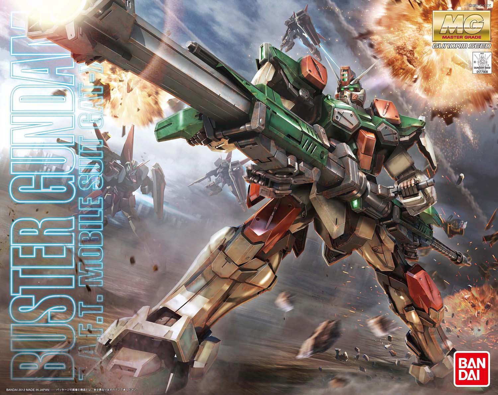

El modelismo Gunpla, una afición que combina la construcción de modelos de los icónicos Mobile Suits de Gundam con la creatividad y personalización, ha ganado una inmensa popularidad en todo el mundo. El término "Gunpla" es una fusión de las palabras "Gundam" y "plastic model", y se refiere a la creación de modelos plásticos detallados y articulados basados en los robots gigantes de la franquicia Gundam. Desde su inicio en Japón, esta afición se ha convertido en una pasión para muchos entusiastas de Gundam y modelistas por igual.
El nacimiento del modelismo Gunpla se remonta a principios de la década de 1980, cuando Bandai, la empresa detrás de la franquicia Gundam, introdujo los primeros kits de plástico para armar. La serie original de Mobile Suit Gundam, que se emitió en 1979, tuvo un impacto profundo y despertó el interés de los fanáticos en recrear y personalizar los mechas que aparecían en la serie. Estos primeros kits eran relativamente simples en comparación con los modelos actuales, pero marcaron el inicio de una afición que se ha expandido a lo largo de los años.
En la actualidad, existen varias líneas de productos Gunpla, cada una con sus propias características y niveles de complejidad. Algunas de las líneas más populares incluyen High Grade (HG), que ofrece modelos accesibles en escala 1/144 con una atención al detalle sorprendente; Real Grade (RG), que se destaca por su nivel excepcional de detalle y articulación en escala 1/144; Master Grade (MG), que presenta modelos en escala 1/100 con un alto grado de detalle y complejidad; y Perfect Grade (PG), la cúspide del modelismo Gunpla, que ofrece modelos en escala 1/60 con una atención al detalle incomparable y funciones avanzadas como iluminación LED. Estas diversas líneas permiten a los modelistas de todos los niveles de experiencia encontrar modelos que se adapten a sus habilidades y preferencias. Descubre más sobre el apasionante mundo del modelismo Gunpla explorando las secciones a continuación.
Los modelos High Grade (HG) 1/144 de los Gunpla de Gundam son kits de modelos a escala que se destacan en la franquicia por su accesibilidad y detalles sorprendentes. La escala 1/144 garantiza que estos modelos sean asequibles y, al mismo tiempo, ofrezcan un alto nivel de detalle y articulación. Son una opción ideal tanto para principiantes como para modelistas experimentados, y están disponibles en una amplia variedad de series de Gundam.
Los modelistas pueden personalizar estos modelos a través de técnicas de pintura y detalles adicionales, lo que los convierte en una elección popular entre los fans. Además, su costo asequible los hace ideales para quienes desean coleccionar y exhibir sus Mobile Suits favoritos sin gastar mucho dinero.
En resumen, los HG 1/144 de Gunpla ofrecen una experiencia de construcción de alta calidad y la posibilidad de mostrar sus personajes de Gundam preferidos en detalle y con realismo.

Los modelos Real Grade (RG) de los Gunpla de Gundam son kits de modelos a escala que se destacan por su excepcional nivel de detalle y articulación. La línea RG utiliza una escala de 1/144, lo que significa que estos modelos son asequibles y accesibles para una amplia gama de entusiastas del modelismo de Gundam. La característica distintiva de los modelos RG es su avanzada ingeniería y diseño, que les permite capturar la apariencia y la movilidad de los Mobile Suits de Gundam de una manera excepcionalmente realista.
Cada modelo RG está diseñado con una precisión asombrosa, y los paneles separados de las piezas permiten una amplia gama de detalles y efectos realistas sin necesidad de pintura. Además, estos modelos vienen con un esqueleto interno que les da una capacidad de articulación sobresaliente, lo que significa que pueden adoptar una variedad de poses dinámicas.
La línea RG incluye una amplia selección de Mobile Suits de Gundam de diferentes series y temporadas, lo que brinda a los coleccionistas la oportunidad de construir y exhibir sus personajes favoritos con un nivel de calidad y autenticidad impresionante. En definitiva, los modelos RG son una elección preferida para aquellos que buscan modelos de alta calidad y realismo que reflejen fielmente el mundo de Gundam.
Los modelos Master Grade (MG) de los Gunpla de Gundam son una gama de kits de modelismo a escala que destacan por su alto nivel de detalle y complejidad de construcción. La línea MG utiliza una escala de 1/100, lo que les permite ser más grandes y detallados que los modelos RG y HG, proporcionando una experiencia de construcción más desafiante y gratificante.
Lo que distingue a la línea MG es su enfoque en la meticulosidad y el realismo. Estos modelos a menudo cuentan con una cantidad excepcional de piezas separadas y detalles, lo que permite una personalización y posado más avanzado. También presentan un esqueleto interno detallado que proporciona una gran articulación, lo que significa que los Mobile Suits pueden adoptar una variedad de posturas y gestos realistas.
La línea MG incluye una amplia variedad de Mobile Suits de diferentes series y temporadas de Gundam, lo que brinda a los aficionados una selección diversa para elegir. La meticulosidad en el diseño de estos modelos y la atención a los detalles hacen que los kits MG sean una elección popular entre los coleccionistas y modelistas que buscan un alto nivel de realismo y autenticidad en sus creaciones de Gundam.
Los modelos Perfect Grade (PG) de los Gunpla de Gundam representan la cúspide de la ingeniería y el modelismo en la franquicia. Estos kits están diseñados para los aficionados más apasionados y experimentados, ya que ofrecen la experiencia de construcción más avanzada y un nivel incomparable de detalle y realismo.
La característica distintiva de la línea PG es su escala 1/60, lo que significa que los modelos son más grandes y proporcionan un nivel de detalle y realismo excepcional. Cada kit PG está lleno de piezas meticulosamente diseñadas, y a menudo incluye características avanzadas, como iluminación LED, esqueletos internos altamente articulados y una amplia variedad de accesorios.
El nivel de atención al detalle en los modelos PG es asombroso, lo que permite una construcción que es tanto un desafío como una experiencia de aprendizaje. Los modelos PG también se distinguen por su meticulosa ingeniería, que permite a los Mobile Suits adoptar una amplia gama de poses realistas y dinámicas. Además, muchos modelos PG cuentan con funciones adicionales, como escotillas móviles y efectos especiales de iluminación.
Si bien los modelos PG son increíbles desde el punto de vista del modelismo, también son una expresión artística de la pasión por Gundam y una oportunidad para los coleccionistas y aficionados más dedicados de sumergirse profundamente en el mundo de Mobile Suit. Aunque los modelos PG requieren más tiempo y paciencia para ensamblar debido a su complejidad, el resultado es una pieza de colección excepcionalmente detallada y realista que celebra la icónica franquicia Gundam.